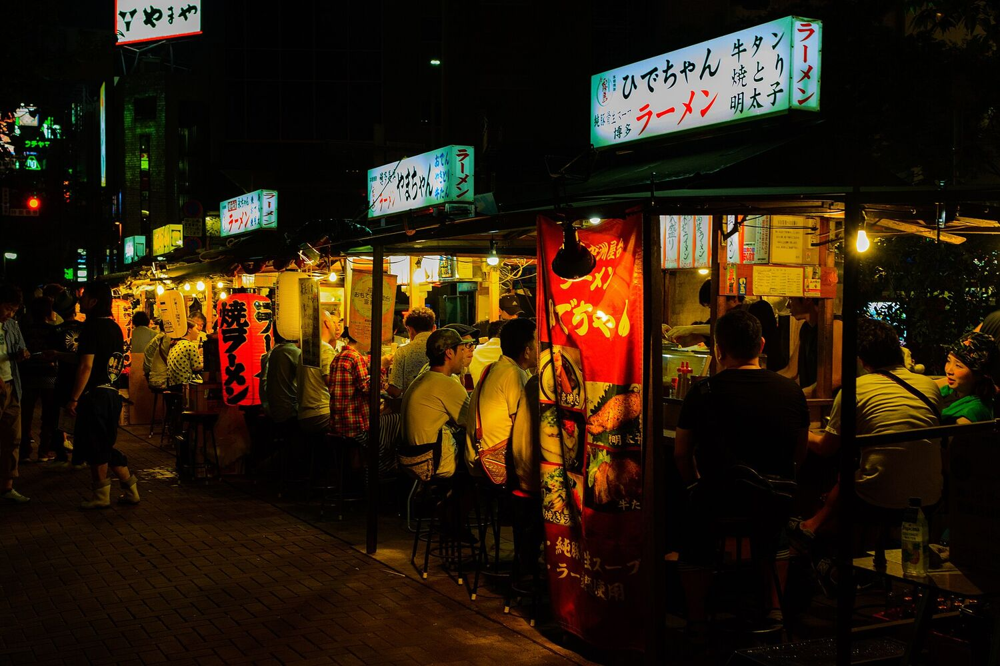
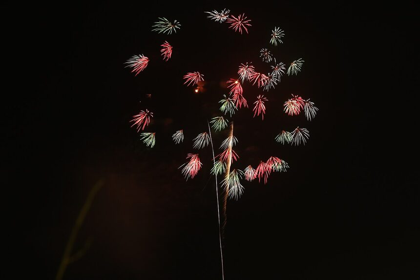
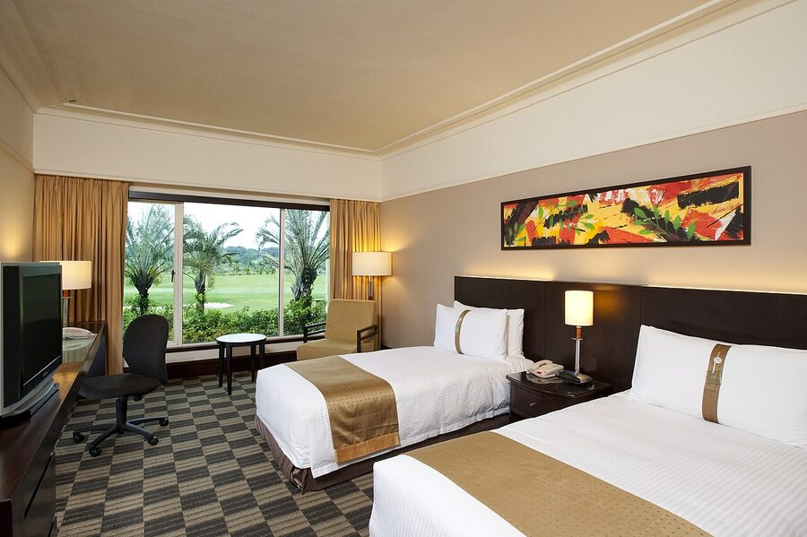
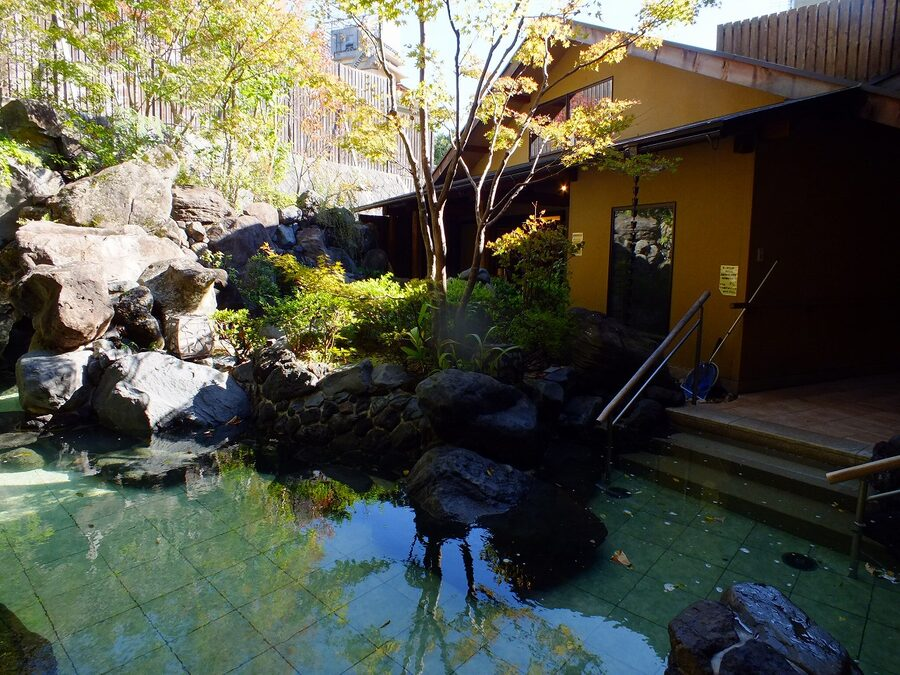
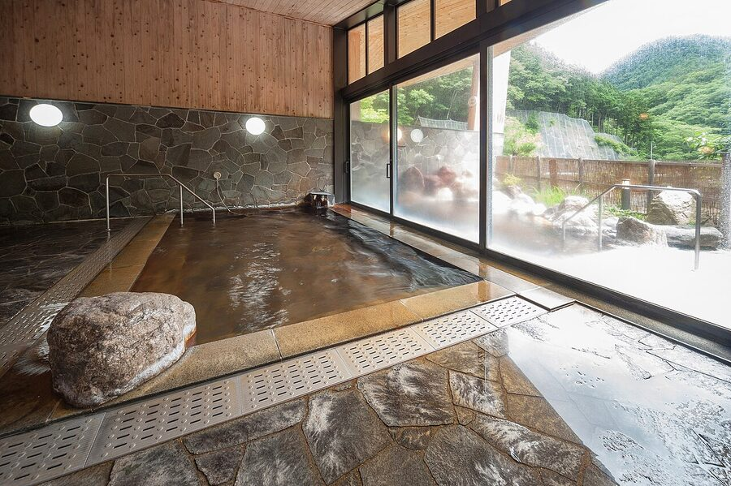
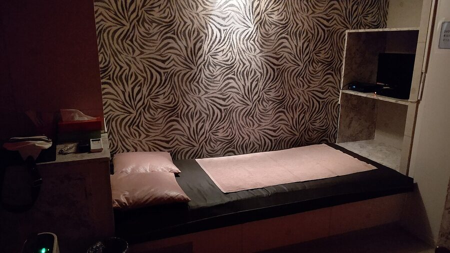
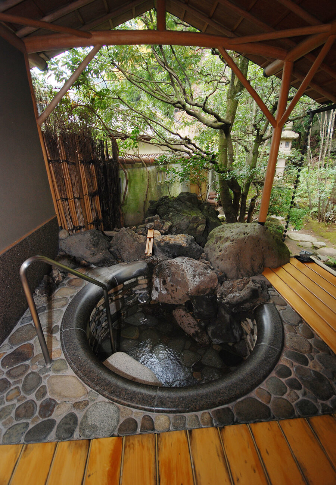
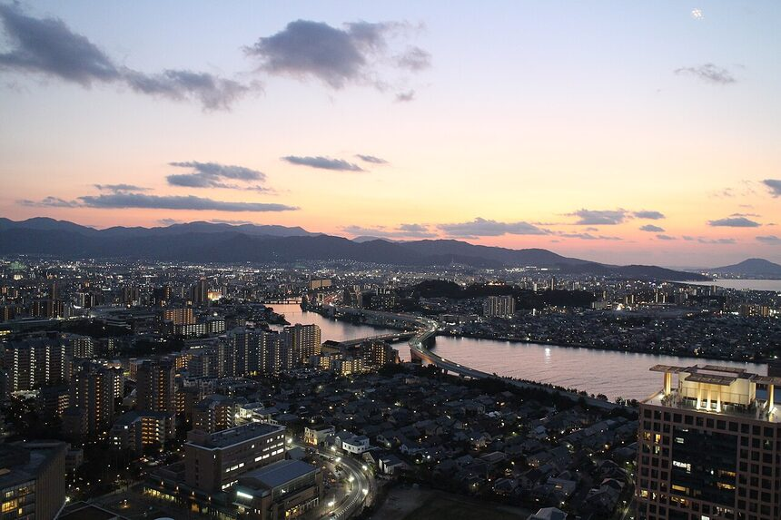
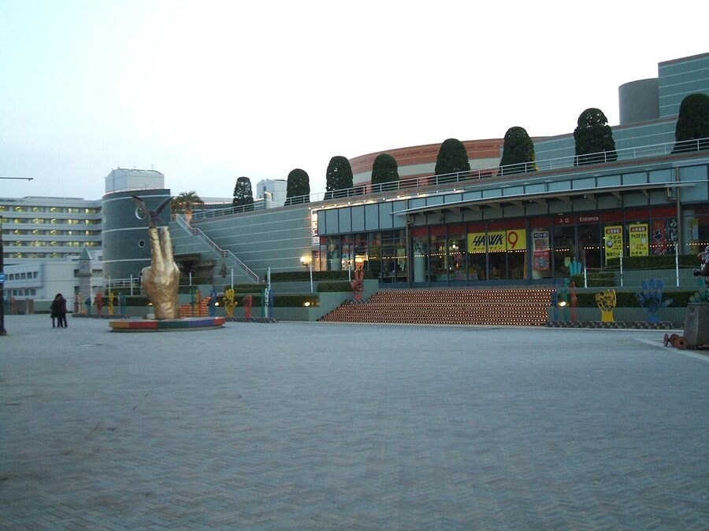

8/3 밤 도착부터 8/5 불꽃축제까지 — 길에서 그냥 펴 보는 우리 셋 올인원 가이드.
짧은 일정엔 '가깝고 + 먹부림 + 이번 주에 큰 불꽃축제'가 답. 셋이 가장 알차게 노는 조합이에요.
367년 역사 지쿠고가와 불꽃축제가 2026.8.5(수)에 열려요. 우리 일정과 정확히 겹치는 단 하나의 대형 불꽃 — 유카타 입고 인생샷.
4개 후보 중 최단. 게다가 공항에서 지하철 2정거장(5분)이면 시내 — 짧은 일정에 시간 손실이 가장 적어요.
라멘·모츠나베·미즈타키·명란·야타이·스시·우나기까지. 한 끼도 버릴 게 없는 도시. 이번 테마는 그냥 먹기.
온천마을 유후인 당일치기, 학문의 신 다자이후 반나절. 도심 먹부림 + 근교 감성을 다 담아요.
도심(하카타·나카스·텐진)을 거점으로, 둘째 날 유후인·셋째 날 저녁 구루메 불꽃까지. 색이 날짜예요.
8/3은 저녁 비행기 → 밤 도착이라 첫날은 가볍게 야식만. 진짜 알맹이는 8/4·8/5예요.
이번 여행이 후쿠오카인 진짜 이유. 우리 날짜에 딱 겹치는 규슈 최대급 불꽃이에요.

367년 역사, 규슈 최대급. 약 1만 5천 발이 강 위로 쏟아져요. 우리 일정(8/3~6)과 겹치는 유일한 대형 불꽃이라, 유카타 빌려 입고 친구 셋 불꽃 배경 인생샷 찍기 딱.
후쿠오카에서 꼭 먹을 대표 먹거리. 사진을 누르면 크게, 가게 이름을 누르면 구글맵. 아래 목록엔 영업시간·휴무·예약·현금 여부까지 다 있어요.
현금 챙길 곳: 야타이·다이치노 우동(현금 전용). 예약할 곳: 미즈타키 토리덴·모츠나베 오오야마·카와타로·USHIO. 8/5(수) 휴무 주의: 신신 라멘, 요시즈카 우나기야(+화요일), 카와야 케고점. 환율 약 100엔 ≈ 950원 기준.
밤 9시 도착이라 야타이 접근성이 핵심. 거점부터 정하고, 트리플룸/3인 가능 호텔 6곳 골랐어요. 카드 사진을 누르면 실제 객실 사진(아고다), '지도 보기'로 위치 확인.

📷 실제 사진 보기
📷 실제 사진 보기
📷 실제 사진 보기
📷 실제 사진 보기
📷 실제 사진 보기8월은 여름방학 최성수기 — 트리플/3인 객실이 먼저 마감돼요. 예약 시 꼭 '3인(트리플 또는 트윈+엑스트라/소파베드)' 옵션을 선택하세요(2인 요금에 인원만 늘리면 입실 거부될 수 있음). 가격은 추정치라 날짜(8/3~6, 3인) 넣고 재확인 필수.
출발은 8/3 저녁편으로 확정 분위기. 복귀편만 둘 중 고르면 돼요. 김포(GMP)→후쿠오카 직항은 없어 인천(ICN) 출발.
스카이스캐너로도 비교 · 시각은 변동되니 예약 전 재확인
오전(09시대)·점심(12~15시대) 편도 많아요. 여유롭게 오고 싶으면 점심편도 OK.
| 등급 | 유형 | 3인 왕복 |
|---|---|---|
| 가성비 | LCC 저녁편 | 약 54~66만 |
| 중간 ★ | LCC+수하물·좌석 | 약 69~84만 |
| 여유 | FSC(대한·아시아나) | 약 73~96만+ |
8/3~6은 오봉(8/13~16) 직전이라 8월 중엔 비교적 저렴. 그래도 성수기 — 일찍 예약할수록 유리해요.
한낮 33°+습함이라 오전 야외 / 한낮 실내 / 밤 야경 원칙. 탭으로 골라 보고, 사진은 눌러서 크게.


항공+숙소+식비+교통 전부+잡비. 유후인 당일치기까지 넣은 값이에요(다자이후만 가면 더 저렴).
3인 총액: 가성비 약 234만 / 중간 약 312만 / 여유 약 459만. 환율 100엔≈950원 기준 추정치.
| 구간 | 요금 |
|---|---|
| 공항 ↔ 하카타 지하철 왕복 | 520엔 |
| 다자이후 왕복 (니시테츠) | 960엔 |
| 유후인 고속버스 왕복 | 6,500엔 |
| 시내 지하철 1일권 (이동 많은 날) | 640엔 |
| 1인 합계 | 약 8,620엔 (~8.3만원) |
패스보다 IC카드 페이고가 정답. 공항이 260엔·2정거장이라 패스 본전이 안 나요. 한국 스이카/티머니 그대로 지하철·니시테츠·JR 다 태그 OK. 지하철 1일권(640엔)은 '하루 3번 이상' 타는 날만. 유후인 고속버스는 7일 전 조기할인(편도 2,880엔)되니 미리 예약하면 1인 약 7,880엔까지 절감. 3인 총 교통비 ≈ 약 25만원(다자이후만 가면 6~7만원대로 뚝).
탭하면 체크돼요. 항목 오른쪽 동그라미를 눌러 담당자를 정하세요. 체크·담당자 모두 이 기기에 저장돼서 다시 와도 그대로예요.